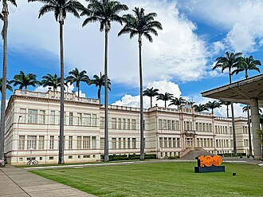

Universidade Federal de Viçosa
De TriânguloLeaks, a enciclopédia do Triângulo Mineiro
|
 CC BY-SA Foto de terceiros, via Wikimedia Commons — consulte a página do arquivo para o nome do autor e a versão exata da licença antes de reutilizar. Sobre o licenciamento. | |
| Resumo | |
|---|---|
| Universidade pública federal sediada em Viçosa, na Zona da Mata mineira — fora do Triângulo Mineiro —, mas com campus próprio na região desde 2006. | |
| Dados | |
| Tipo | Universidade pública federal |
| Fundação (como ESAV) | Decreto de 1922; inaugurada em 1926 |
| Sede | Viçosa, Zona da Mata, Minas Gerais |
| Campus no Triângulo Mineiro/Alto Paranaíba | Rio Paranaíba (criado em 2006) |
{kind=link}
A Universidade Federal de Viçosa (UFV) é uma universidade pública federal brasileira sediada em Viçosa, na Zona da Mata mineira — uma região distinta do Triângulo Mineiro. A instituição tem origem na Escola Superior de Agricultura e Veterinária (ESAV), criada por decreto em 1922 e inaugurada em 28 de agosto de 1926 sob direção do agrônomo norte-americano Peter Henry Rolfs. Embora sua sede não esteja no Triângulo Mineiro, a UFV mantém, desde 2006, um campus próprio na região: o Campus Rio Paranaíba, no Alto Paranaíba mineiro.[1][2]
Da ESAV à UFV [editar]
Da ESAV à UFV [editar]
A Escola Superior de Agricultura e Veterinária (ESAV) foi criada pelo Decreto estadual nº 6.053, de 30 de março de 1922, e inaugurada em 28 de agosto de 1926, sob a direção do agrônomo Peter Henry Rolfs, convidado da Universidade da Flórida (EUA) para organizar e dirigir a nova escola. Em 1948, a instituição foi reorganizada como Universidade Rural do Estado de Minas Gerais (UREMG) e, em 15 de julho de 1969, federalizada como Universidade Federal de Viçosa.[1]
Localização: fora do Triângulo Mineiro [editar]
Localização: fora do Triângulo Mineiro [editar]
É importante notar que a sede e o campus principal da UFV situam-se em Viçosa, na Zona da Mata mineira — uma mesorregião distinta e geograficamente distante do Triângulo Mineiro, tratado neste site. A UFV não deve, portanto, ser confundida com a Universidade Federal de Uberlândia (UFU) nem com a Universidade Federal do Triângulo Mineiro (UFTM), ambas efetivamente sediadas na região.
Campus Rio Paranaíba [editar]
Campus Rio Paranaíba [editar]
Apesar de sua sede ficar fora da região, a UFV mantém presença direta e documentada no Triângulo Mineiro e Alto Paranaíba desde 2006, quando foi criado o Campus Rio Paranaíba (CRP), no município de Rio Paranaíba. Ao completar 20 anos em 2026, o campus oferecia 12 cursos de graduação nas áreas de ciências agrárias, exatas, tecnologia, biológicas, saúde e sociais aplicadas, reunindo cerca de 1.572 estudantes e mais de 3.200 egressos, além de programas de pós-graduação em Agronomia, Química e Administração Pública.[3]
A universidade também mantém, desde ao menos a década de 1970, o Centro de Experimentação, Pesquisa e Extensão do Triângulo Mineiro (Cepet), em Capinópolis, voltado à pesquisa agronômica regional.[4] [verificar data exata de criação do Cepet]
Localização [editar]
Localização [editar]
Local principal ou mencionado neste artigo: Universidade Federal de Viçosa, Viçosa, Minas Gerais.
Ver também
Referências
- ↑ UFV — Universidade Federal de Viçosa. "História" — usado para a criação da ESAV (1922/1926), Peter Henry Rolfs, a UREMG (1948) e a federalização como UFV (1969). ufv.br/historia.
- ↑ Wikipédia, a enciclopédia livre. "Universidade Federal de Viçosa" (consultado em 2026) — usado para dados gerais sobre a instituição. pt.wikipedia.org/wiki/Universidade_Federal_de_Viçosa.
- ↑ UFV. "Campus Rio Paranaíba: 20 anos transformando vidas e impulsionando o desenvolvimento regional" (notícia institucional, 2026) — usado para a criação do campus em 2006 e os dados sobre cursos, estudantes e egressos. www2.dti.ufv.br.
- ↑ Arquivo Histórico Central da UFV (UFV-Atom). "Cepet (Capinópolis)" — usado para a existência do Centro de Experimentação, Pesquisa e Extensão do Triângulo Mineiro, em Capinópolis, vinculado à UFV. atom.ufv.br/index.php/cepet.